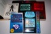

Review Your Favorite Teen Fiction.
Here is your chance to say which books are must reads on your shelves.
Alex Rider Series
By Anthony Horowitz
Stormbreaker, Point Blanc, Skeleton, Eagle Strike, Scorpia, Ark Angel and Snakehead
Stormbreaker is also a movie, although does not keep to the book.
See www.alexrider.com or www.anthonyhorowitz.com
Alex is a fourteen year old spy. He does not plan to go on missions but lands himself in them.
Artemis Fowl Series
By Eoin Colfer.
Artemis Fowl, The Arctic Incident, The Eternity Code, The Opal Deception, The Lost Colony
Artemis Fowl is being turned into a movie.
See www.artemisfowl.com or www.eoincolfer.com
Artemis Fowl is a 13 year old master criminal who discovers about the fairy folk.
Children Of The Lamp Series
By P B Kerr
The Akhenaten Adventure, The Blue Djinn of Babylon, The Cobra King of Kathmandu and The Day of the Djinn Warrior.
See www.pbkerr.com
Twins discover they are actually djinn, and their adventures.

The Demonata Series
by Darren Shan
Book Order - Lord Loss, Demon Thief, Slawter, Bec, Blood Beast, Demon Apocalypse
Event Order - Bec, Demon Thief, Lord Loss, Slawter, Blood Beast, Demon Apocalypse
See www.darrenshan.com
The Demonata by Darren Shan are also a fantastic set of books and are very gripping. The first chapter of book 1 (Lord Loss) sounds like an ordinary book, then at the very start of chapter 2 you are sucked into a full-blown gore-fest. They aren't just gore though, they do have a great story, as many people try to prevent the world from becoming iverrun by demons, and the main character Grubbs Grady has to battle his inner werewolf self.
The Diamond Brothers Series
By Anthony Horowitz
The Falcon's Malteser, Public Enemy Number Two, South By South East, The Blurred Man, The French Confection, I Know What You Did Last Wednesday, The Greek Who Stole Christmas.
See www.anthonyhorowitz.com
From Ship's Mouse
The diamond brothers are two brothers, the elder (Tim) is a detective and the younger (Nick) is the brains and still at school. Tim is not very bright and the things he does ...
The Divide Trilogy
By Elizabeth Kay
Divide, Back to the Divide and Jinx on The Divide
See www.elizabeth-kay.co.uk
A land where magic is normality and science is mythical.
The Eragon Trilogy
By Christopher Paolini
Eragon and Eldest
The movie is also called Eragon and owing to the size of the books only includes half the story.
See www.alagaesia.com
Maybe I'm just weird, but I couldn't finish Eragon. I adore dragons and fantasy/ sci-fi/ adventure books, but I got a third of the way through Eragon and had to put it down because got so bored!
If you touch a dragon's egg and the dragon thinks you would be a good rider it will hatch. That is when Eragon's problems start.

Groosham Grange Set
By Anthony Horowitz
Groosham Grange and The Unholy Grail (or Return to Groosham Grange)
See www.anthonyhorowitz.com
The school and pupils are not what they seem.
Harry Potter Series
By JK Rowling
Philosopher's Stone, Chamber of Secrets, The Prisoner of Azkaban, Goblet of Fire, Order of the Phoenix, The Half-Blood Prince and The Deathly Hallows.
Also Fantastic Beasts and Where to Find Them and Quidditch Through the Ages.
Six out of the seven books are films.
See www.the-leaky-cauldron.org or www.jkrowling.com
Each book is another year of Harry Potter's life from age eleven when he discovers he is a wizard.
His Dark Materials Trilogy
By Philip Pullman
Northern Lights, The Subtle Knife and The Amber Spyglass.
The Golden Compass is the film version of the Northern lights.
See www.hisdarkmaterials.org, www.darkmaterials.com or www.philip-pullman.com
There are worlds beyond our own - the compass will show the way.
Stories By Eva Ibbotson
There are over 20 titles to pick from. Shown here are:
Which Witch?, The Secret of Platform 13/Monster Mission and The Beasts of Clawstone Castle.
See www.fantasticfiction.co.uk/i/eva-ibbotson
Stories based in reality with fictional creatures or twists.
Inkworld Trilogy
By Cornelia Funke
Inkheart and Inkspell
Inkheart is another which has become a movie.
See www.corneliafunke.de
What if the characters of the book came alive?
The Keys To The Kingdom
by Garth Nix
Mister Monday, Grim Tuesday, Drowned Wednesday, Sir Thursday, Lady Friday, Superior Saturday (not yet released), Lord Sunday (not yet released)
See www.keystothekingdom.com.au or www.garthnix.co.uk
Just remembered there's a really great series of books by Garth Nix called "The Keys To The Kingdom". Sometimes the books take a while to get going (Mister Monday is a struggle for the first half), but they get far better when you're further into the book. The idea is completely original and they are really fun to read and visualise. Drowned Wednesday is my favourite because it contains pirates and talking spy rats :)

The Power Of Five Series
By Anthony Horowitz
Raven's Gate, Evil Star, Nightrise, Necropolis: City of the Dead
see or www.anthonyhorowitz.com
Alex Rider with demons, spells, and prophecies! A must-read for all ages.

Stories by Marcus Sedgwick
Cowards, Floodland, The Dark Horse, Witch Hill, The Foreshadowing, The Book Of Dead Days, Dark Flight Down, Blood Red Snow White and My Swordhand Is Singing
See www.marcussedgwick.com
Marcus Sedgwick is one of the world's best authors. Each of his books is intriguing and unlike everything I've ever read before. Each page leaves you itching to read the next. Marcus also adores Vampirates so that's even more of a reason to read his books!
The Secrets of the Immortal Nicholas Flamel
by Michael Scott
The Alchemyst, The Magician (will be released June 24th 2008)
The Secrets of the Immortal Nicholas Flamel are fantastic! They mix old-fashioned magic with modern-day life and are packed with adventure, which at some points can leave you breathless with anticipation and excitement. The theory on life before the dinosaurs that's mentioned is really spellbinding - if it's true then the world will finally seem more interesting! :) These books are great for Harry Potter fans in particular.
Skulduggery Pleasant
By Derek Landy
See www.skulduggerypleasant.com
I've finished Skulduggery Pleasant: Playing with Fire (book 2 in the series), and as predicted, it was absolutely amazing. Even more gripping than the first, Playing with Fire kept me hooked from start to end. This instalment includes vampires, as evil Baron Vengeous escapes from jail and sets about bringing the Grotesquery to life to bring back the evil gods from so long ago. Bring on number 3 and the movie! 5/5
Wise-cracking detective, powerful magician, sworn enemy of evil. Oh yes - and dead. It's a murder mystery with a teen age girl and a skeleton of a magician.
Tales Of The Otori Series
By Lian Hearn
Across the Nightingale Floor, Grass for His Pillow, Brilliance of the Moon and The Harsh Cry of the Heron,
Another where a film is planed.
See http://www.theotori.com or www.lianhearn.com
Based in feudal Japan.
Tales of Middle Earth Series
By JRR Tolkien
The Hobbit, Lord Of The Rings (Fellowship of the Ring, The Two Towers, Return of the King.
Lord Of The Rings is also found as a movie in three parts.
See www.tolkiensociety.org or www.lordoftherings.net
These were the must read Sci-Fantacy books when I was at college.
Twilight Series
By Stephenie Meyer
Twilight, New Moon, Eclipse, Breaking Dawn
Another where a film has been made.
See www.stepheniemeyer.com/twilightseries.html or www.freewebs.com/twilightfanheaven
WOW. I finshed reading Twilight yesterday and I just couldn't put it down. I can't stand lovey-dovey stuff, but Twilight is so well-written and contains lots of suspense and adventure, that the book is a total exception! The nail-biting part near the end with James was just so heart-pounding and gripping. I can't wait to read New Moon and to see the Twilight movie (so long as they don't ruin it :/ ). The relationship between Bella and Edward really reminds me of Grace and Lorcan, which automatically makes it awesome! 10/10 for definite!
From Notorious Black Bart's Daughter
I have only read Twilight, the first book of the series but just by reading that I LOVE it!
In twilight, a 17 year old girl moves to Forks from Pheonix in America. She meets a boy and slowly starts to fall in love with him, but little does she know that he's a vampire! She soons find out, and gets herself and everyone she loves in danger. A must read for buddy readers, I rate it as 10/10!!
Vampirates Series
By Justin Somper
Demons of the Ocean, Dead Deep, Tide of Terror and Blood Captain.
See www.freewebs.com/thenocturn or www.vampirates.co.uk
This is why I decided to do a Vampirates fan site.